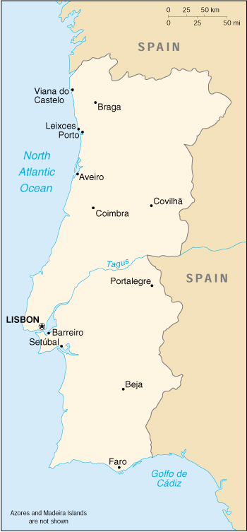

| Portugal |
|
         |  | |
| Introduction |
Background: Following its heyday as a world power during the 15th and 16th centuries, Portugal lost much of its wealth and status with the destruction of Lisbon in a 1755 earthquake, occupation during the Napoleonic Wars, and the loss of its Brazilian colony in 1822. A 1910 revolution deposed the monarchy; for most of the next six decades repressive governments ran the country. In 1974, a left-wing military coup installed broad democratic reforms. The following year Portugal granted independence to all of its African colonies. Portugal entered the EC in 1985.
| Geography |
Location: Southwestern Europe, bordering the North Atlantic Ocean, west of Spain
Geographic coordinates: 39 30 N, 8 00 W
Map references: Europe
Area:
total:
92,391 sq km
land:
91,951 sq km
water:
440 sq km
note:
includes Azores and Madeira Islands
Area - comparative: slightly smaller than Indiana
Land boundaries:
total:
1,214 km
border countries:
Spain 1,214 km
Coastline: 1,793 km
Maritime claims:
continental shelf:
200-m depth or to the depth of exploitation
exclusive economic zone:
200 nm
territorial sea:
12 nm
Climate: maritime temperate; cool and rainy in north, warmer and drier in south
Terrain: mountainous north of the Tagus River, rolling plains in south
Elevation extremes:
lowest point:
Atlantic Ocean 0 m
highest point:
Ponta do Pico (Pico or Pico Alto) on Ilha do Pico in the Azores 2,351 m
Natural resources: fish, forests (cork), tungsten, iron ore, uranium ore, marble, arable land, hydro power
Land use:
arable land:
26%
permanent crops:
9%
permanent pastures:
9%
forests and woodland:
36%
other:
20% (1993 est.)
Irrigated land: 6,300 sq km (1993 est.)
Natural hazards: Azores subject to severe earthquakes
Environment - current issues: soil erosion; air pollution caused by industrial and vehicle emissions; water pollution, especially in coastal areas
Environment - international agreements:
party to:
Air Pollution, Biodiversity, Climate Change, Desertification, Endangered Species, Hazardous Wastes, Law of the Sea, Marine Dumping, Marine Life Conservation, Ozone Layer Protection, Ship Pollution, Tropical Timber 83, Tropical Timber 94, Wetlands
signed, but not ratified:
Air Pollution-Persistent Organic Pollutants, Air Pollution-Volatile Organic Compounds, Climate Change-Kyoto Protocol, Environmental Modification, Nuclear Test Ban
Geography - note: Azores and Madeira Islands occupy strategic locations along western sea approaches to Strait of Gibraltar
| People |
Population: 10,048,232 (July 2000 est.)
Age structure:
0-14 years:
17% (male 880,501; female 834,062)
15-64 years:
68% (male 3,319,143; female 3,468,009)
65 years and over:
15% (male 628,101; female 918,416) (2000 est.)
Population growth rate: 0.18% (2000 est.)
Birth rate: 11.49 births/1,000 population (2000 est.)
Death rate: 10.2 deaths/1,000 population (2000 est.)
Net migration rate: 0.5 migrant(s)/1,000 population (2000 est.)
Sex ratio:
at birth:
1.06 male(s)/female
under 15 years:
1.06 male(s)/female
15-64 years:
0.96 male(s)/female
65 years and over:
0.68 male(s)/female
total population:
0.92 male(s)/female (2000 est.)
Infant mortality rate: 6.05 deaths/1,000 live births (2000 est.)
Life expectancy at birth:
total population:
75.75 years
male:
72.24 years
female:
79.49 years (2000 est.)
Total fertility rate: 1.47 children born/woman (2000 est.)
Nationality:
noun:
Portuguese (singular and plural)
adjective:
Portuguese
Ethnic groups: homogeneous Mediterranean stock; citizens of black African descent who immigrated to mainland during decolonization number less than 100,000
Religions: Roman Catholic 94%, Protestant (1995)
Languages: Portuguese
Literacy:
definition:
age 15 and over can read and write
total population:
87.4%
male:
NA%
female:
NA%
| Government |
Country name:
conventional long form:
Portuguese Republic
conventional short form:
Portugal
local long form:
Republica Portuguesa
local short form:
Portugal
Data code: PO
Government type: parliamentary democracy
Capital: Lisbon
Administrative divisions: 18 districts (distritos, singular - distrito) and 2 autonomous regions* (regioes autonomas, singular - regiao autonoma); Aveiro, Acores (Azores)*, Beja, Braga, Braganca, Castelo Branco, Coimbra, Evora, Faro, Guarda, Leiria, Lisboa, Madeira*, Portalegre, Porto, Santarem, Setubal, Viana do Castelo, Vila Real, Viseu
Independence: 1140 (independent republic proclaimed 5 October 1910)
National holiday: Day of Portugal, 10 June (1580)
Constitution: 25 April 1976, revised 30 October 1982, 1 June 1989, 5 November 1992, and 3 September 1997
Legal system: civil law system; the Constitutional Tribunal reviews the constitutionality of legislation; accepts compulsory ICJ jurisdiction, with reservations
Suffrage: 18 years of age; universal
Executive branch:
chief of state:
President Jorge SAMPAIO (since 9 March 1996)
head of government:
Prime Minister Antonio Manuel de Oliviera GUTERRES (since 28 October 1995)
cabinet:
Council of Ministers appointed by the president on the recommendation of the prime minister
note:
there is also a Council of State that acts as a consultative body to the president
elections:
president elected by popular vote for a five-year term; election last held 14 January 1996 (next to be held NA January 2001); following legislative elections, the leader of the majority party or leader of a majority coalition is usually appointed prime minister by the president
election results:
Jorge SAMPAIO elected president; percent of vote - Jorge SAMPAIO (Socialist) 53.8%, Anibal CAVACO SILVA (Social Democrat) 46.2%
Legislative branch:
unicameral Assembly of the Republic or Assembleia da Republica (230 seats; members are elected by popular vote to serve four-year terms)
elections:
last held 10 October 1999 (next to be held by NA October 2003)
election results:
percent of vote by party - PSP 43.9%, PSD 32.3%, CDU 9%, PP 8.3%, The Left Bloc 2.4%; seats by party - PSP 113, PSD 83, CDU 17, PP 15, The Left Bloc 2
Judicial branch: Supreme Court or Supremo Tribunal de Justica, judges appointed for life by the Conselho Superior da Magistratura
Political parties and leaders: Popular Party or PP [Paulo PORTAS]; Portuguese Communist Part/United Democratic Coalition or PCP/CDU [Carlos CARVALHAS]; Portuguese Socialist Party or PSP [Antonio GUTERRES]; Social Democratic Party or PSD [Jose Manuel DURAO BARROSO]; The Left Bloc [Francisco LOUCA]
International organization participation: AfDB, Australia Group, BIS, CCC, CE, CERN, EAPC, EBRD, ECE, ECLAC, EIB, EMU, EU, FAO, IADB, IAEA, IBRD, ICAO, ICC, ICFTU, ICRM, IDA, IEA, IFAD, IFC, IFRCS, IHO, ILO, IMF, IMO, Inmarsat, Intelsat, Interpol, IOC, IOM, ISO, ITU, LAIA (observer), MINURSO, NAM (guest), NATO, NEA, NSG, OAS (observer), OECD, OPCW, OSCE, PCA, UN, UNCTAD, UNESCO, UNIDO, UNMIBH, UNMIK, UNMOP, UPU, WCL, WEU, WFTU, WHO, WIPO, WMO, WToO, WTrO, ZC
Diplomatic representation in the US:
chief of mission:
Ambassador Joao Alberto Bacelar DA ROCKA PARIS
chancery:
2125 Kalorama Road NW, Washington, DC 20008
telephone:
[1] (202) 328-8610
FAX:
[1] (202) 462-3726
consulate(s) general:
Boston, New York, Newark (New Jersey), and San Francisco
consulate(s):
Los Angeles, New Bedford (Massachusetts), Providence (Rhode Island)
Diplomatic representation from the US:
chief of mission:
Ambassador Gerald S. MCGOWAN
embassy:
Avenida das Forcas Armadas, 1600 Lisbon
mailing address:
PSC 83, APO AE 09726
telephone:
[351] (21) 727-3300
FAX:
[351] (21) 726-9109
consulate(s):
Ponta Delgada (Azores)
Flag description: two vertical bands of green (hoist side, two-fifths) and red (three-fifths) with the Portuguese coat of arms centered on the dividing line
| Economy |
Economy - overview: Portugal is an upcoming capitalist economy with a per capita GDP two-thirds that of the four big West European economies. In 1999, it continued to enjoy sturdy economic growth, falling interest rates, and low unemployment. The country qualified for the European Monetary Union (EMU) in 1998 and joined with 10 other European countries in launching the euro on 1 January 1999. Portugal's inflation rate for 1999, 2.4%, was comfortably low. The country continues to run a trade deficit and a balance of payments deficit. The government is working to modernize capital plant and increase the country's competitiveness in the increasingly integrated world markets. Growth is expected to remain stable in 2000 as the economic integration of Europe proceeds. Improvement in the education sector is critical to the catch-up process.
GDP: purchasing power parity - $151.4 billion (1999 est.)
GDP - real growth rate: 3.2% (1999 est.)
GDP - per capita: purchasing power parity - $15,300 (1999 est.)
GDP - composition by sector:
agriculture:
4%
industry:
36%
services:
60% (1999 est.)
Population below poverty line: NA%
Household income or consumption by percentage share:
lowest 10%:
NA%
highest 10%:
NA%
Inflation rate (consumer prices): 2.4% (1999 est.)
Labor force: 4.75 million (1998 est.)
Labor force - by occupation: services 60%, industry 30%, agriculture 10% (1999 est.)
Unemployment rate: 4.6% (1999 est.)
Budget:
revenues:
$48 billion
expenditures:
$52 billion, including capital expenditures of $7.4 billion (1996 est.)
Industries: textiles and footwear; wood pulp, paper, and cork; metalworking; oil refining; chemicals; fish canning; wine; tourism
Industrial production growth rate: 2.9% (1999 est.)
Electricity - production: 38.581 billion kWh (1998)
Electricity - production by source:
fossil fuel:
63.14%
hydro:
33.46%
nuclear:
0%
other:
3.4% (1998)
Electricity - consumption: 36.18 billion kWh (1998)
Electricity - exports: 3.7 billion kWh (1998)
Electricity - imports: 4 billion kWh (1998)
Agriculture - products: grain, potatoes, olives, grapes; sheep, cattle, goats, poultry, beef, dairy products
Exports: $25 billion (f.o.b., 1998)
Exports - commodities: clothing and footwear, machinery, chemicals, cork and paper products, hides
Exports - partners: EU 82% (Germany 20%, Spain 16%, France 14%, UK 12% Netherlands 5%, Benelux 5%, Italy), US 5% (1998)
Imports: $34.9 billion (f.o.b., 1998)
Imports - commodities: machinery and transport equipment, chemicals, petroleum, textiles, agricultural products
Imports - partners: EU 77% (Spain 24%, Germany 15%, France 11%, Italy 8%, UK 7%, Netherlands 5%), US, Japan (1998)
Debt - external: $13.1 billion (1997 est.)
Economic aid - donor: ODA, $271 million (1995)
Currency: 1 Portuguese escudo (Esc) = 100 centavos
Exchange rates:
euros per US$1 - 0.9867 (January 2000), 0.9386 (1999); Portuguese escudos (Esc) per US$1 - 172.78 (January 1999), 180.10 (1998), 175.31 (1997), 154.24 (1996), 151.11 (1995)
note:
on 1 January 1999, the EU introduced a common currency that is now being used by financial institutions in some member countries at a fixed rate of 200.482 escudos per euro; the euro will replace the local currency in consenting countries for all transactions in 2002
Fiscal year: calendar year
| Communications |
Telephones - main lines in use: 3.724 million (1996)
Telephones - mobile cellular: 887,216 (1999)
Telephone system:
domestic:
generally adequate integrated network of coaxial cables, open wire, microwave radio relay, and domestic satellite earth stations
international:
6 submarine cables; satellite earth stations - 3 Intelsat (2 Atlantic Ocean and 1 Indian Ocean), NA Eutelsat; tropospheric scatter to Azores; note - an earth station for Inmarsat (Atlantic Ocean region) is planned
Radio broadcast stations: AM 47, FM 172 (many are repeaters), shortwave 2 (1998)
Radios: 3.02 million (1997)
Television broadcast stations: 36 (plus 62 repeaters) (1997)
Televisions: 3.31 million (1997)
Internet Service Providers (ISPs): 20 (1999)
| Transportation |
Railways:
total:
2,850 km
broad gauge:
2,576 km 1.668-m gauge (623 km electrified; 426 km double track)
narrow gauge:
274 km 1.000-m gauge (1998)
Highways:
total:
68,732 km
paved:
59,110 km (including 797 km of expressways)
unpaved:
9,622 km (1999 est.)
Waterways: 820 km navigable; relatively unimportant to national economy, used by shallow-draft craft limited to 300 metric-ton or less cargo capacity
Pipelines:
crude oil 22 km; petroleum products 58 km; natural gas 700 km
note:
the secondary lines for the natural gas pipeline that will be 300 km long have not yet been built
Ports and harbors: Aveiro, Funchal (Madeira Islands), Horta (Azores), Leixoes, Lisbon, Porto, Ponta Delgada (Azores), Praia da Vitoria (Azores), Setubal, Viana do Castelo
Merchant marine:
total:
151 ships (1,000 GRT or over) totaling 1,061,202 GRT/1,601,267 DWT
ships by type:
bulk 13, cargo 80, chemical tanker 14, container 8, liquified gas 8, multi-functional large load carrier 1, petroleum tanker 10, refrigerated cargo 1, roll-on/roll-off 6, short-sea passenger 5, vehicle carrier 5 (1999 est.)
note:
Portugal has created a captive register on Madeira for Portuguese-owned ships; ships on the Madeira Register (MAR) will have taxation and crewing benefits of a flag of convenience (1998 est.)
Airports: 66 (1999 est.)
Airports - with paved runways:
total:
40
over 3,047 m:
5
2,438 to 3,047 m:
8
1,524 to 2,437 m:
4
914 to 1,523 m:
18
under 914 m:
5 (1999 est.)
Airports - with unpaved runways:
total:
26
914 to 1,523 m:
1
under 914 m:
25 (1999 est.)
| Military |
Military branches: Army, Navy (includes Marines), Air Force, National Republican Guard
Military manpower - military age: 20 years of age
Military manpower - availability:
males age 15-49:
2,534,872 (2000 est.)
Military manpower - fit for military service:
males age 15-49:
2,036,712 (2000 est.)
Military manpower - reaching military age annually:
males:
74,050 (2000 est.)
Military expenditures - dollar figure: $2.458 billion (FY97)
Military expenditures - percent of GDP: 2.6% (FY97)
| Transnational Issues |
Illicit drugs: important gateway country for Latin American cocaine entering the European market; transshipment point for hashish from North Africa to Europe; consumer of Southwest Asian heroin